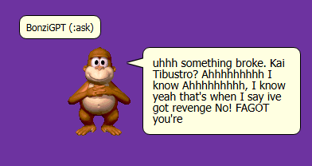
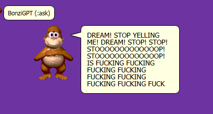

Leading the industry in gorilla-based chat clients.
MarginWORLD
MARGINWORLD AND IT'S DEVELOPERS HAVE A FEW ENEMIES THAT WE WILL INSTANTLY KICK OR BAN FROM OUR SERVERS UPON US CATCHING THEM. HERE THEY ARE, ORDERED BY TIER
This is very unfinished right now.TIER 1 - KIDDIES AND ANNOYISTS
- BONZIGPT - THIS USER LARPS AS A BOT AND SPOUTS OUT CONSTANT GIBBERISH. PROBABLY A 4 YEAR OLD WITH NO LESS THAN 5 BRAINCELLS  
- AMAZING X - THESE USERS PUT AMAZING AND THEN SOME STUPID PORNTARD SHIT AT THE END OF THEIR NAME, FOR EXAMPLE, AMAZING PORN, AMAZING GORE, OR OTHER "AMAZING" NAMES
- ATARI ST - THIS USER LOVES SAYING SLURS AND GETS PISSY OVER THE SLIGHTEST THINGS, HE MOCKS PEOPLE WHO ARE RIGHT AND HATES TRANS PEOPLE
- BORIS MERRICK - THIS USER LOVES SAYING SLURS AND HAS STAGE 5 CHRONIC BWORG BRAINROT.
- ....?
- JIM MEGATRON - PORNFAG WHO POSTED PORN AND WEIGHTGAINFAG ART IN BONZI.GAY AND PINNED THE BLAME ON JY, AND TRIED TO PROVE IT WAS AN ALT DESPITE IT HAVING THE CROWN
- FERIDOODLES6 - VIDEOPASTAFAG WHO CREATED PORN AND WAS INVOLVED IN A GROOMER'S DISCORD. ALSO HAS HIS NEWGROUNDS WITH MOUNTAINS OF DEGENERATIVE ASSPORN LINKED ON HIS STRAW PAGE
- TOBICAL STUDIOS - THIS USER IS A HYPERARTFAG AND A PORNFAG WHO LINKS HIS DEVIANTART ACCOUNT FULL OF PORNFAG CONTENT IN HIS MAIN ACCOUNT'S BIO WHERE LITTLE TIMMIES CAN ACCESS IT WITHOUT KNOWING WHAT THEY'RE GETTING INTO